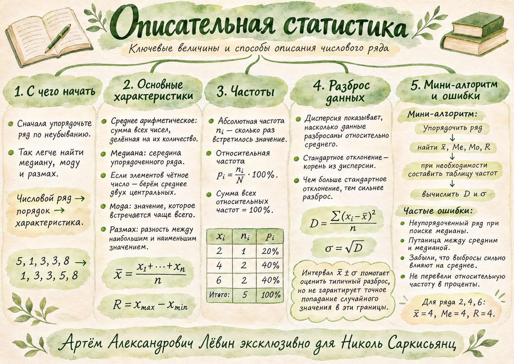

Учебный атлас / глава 02.11
Описательная статистика
Один набор чисел можно описать разными способами: найти центр, увидеть повторения и измерить, насколько далеко данные разбросаны от среднего.
Данные занятия / упорядоченный ряд
01 / первые действия
От набора чисел к порядку
Статистическое описание начинаем с упорядочивания всех значений. Повторяющиеся числа сохраняем.
Данные из занятия:
Упорядоченный ряд
Объём выборки — количество всех элементов, здесь N = 7.
«Сначала расположите числа по неубыванию».
Это позволит без лишних пересчётов найти медиану, крайние значения и размах.
02 / положения и повторения
Среднее · медиана · мода · размах
Каждая характеристика отвечает на свой вопрос о данных.
Сумма всех чисел, делённая на их количество.
Число в середине упорядоченного ряда. При нечётном количестве берём центральное значение; при чётном — среднее двух центральных.
Для ряда 1, 2, 3, 4, 5, 10 медиана равна (3 + 4) / 2 = 3,5.
Наиболее часто встречающееся значение; мод может быть несколько. В ряду 1, 1, 3, 3, 3, 5, 5, 10, 10 мода равна 3.
Максимум минус минимум.
Алгоритм нахождения медианы
1. Упорядочьте числа, сохраняя повторения.
2. Посчитайте N.
3. Нечётное N: найдите одно центральное число.
4. Чётное N: сложите два центральных и разделите на 2.
Среднее не обязано совпадать с элементом ряда. Медиана не обязана совпадать со средним.
03 / вес значений
Таблица частот
Когда значения повторяются, вместо длинного ряда можно указать, сколько раз встретилось каждое число.
| Значение xᵢ | Частота nᵢ | Доля pᵢ | Проценты |
|---|---|---|---|
| 1 | 3 | 3/11 | 27,27% |
| 2 | 2 | 2/11 | 18,18% |
| 3 | 5 | 5/11 | 45,45% |
| 4 | 1 | 1/11 | 9,09% |
| Итого | 11 | 1 | ≈100% |
Количество появлений данного значения.
Абсолютная частота, делённая на объём выборки.
Чтобы получить проценты, умножьте долю на 100%.
Сумма всех абсолютных частот равна N. Сумма всех долей равна единице (100%).
04 / расстояние до среднего
Дисперсия и стандартное отклонение
Дисперсия усредняет квадраты расстояний от каждого значения до среднего, учитывая абсолютные частоты.
Сначала среднее. Затем квадраты отклонений. Затем учёт частот. Затем деление на N.
Для таблицы 1, 2, 3, 4 с частотами 3, 2, 5, 1:
Среднее: (3·1 + 2·2 + 5·3 + 1·4) / 11 = 26/11 ≈ 2,36.
Сумма квадратов: 3·1² + 2·2² + 5·3² + 1·4² = 72.
Дисперсия: D = 72/11 − (26/11)² = 116/121 ≈ 0,959.
Отклонение: σ = √D ≈ 0,98.
Вторая форма приводит к тому же результату.
Здесь приблизительно [1,38; 3,34]. Внутри находятся значения 2 и 3: вместе 7 наблюдений из 11.
Интервал помогает оценить разброс. Он не гарантирует попадание случайного значения в эти границы.
05 / устойчивость
Выброс и два разных центра
Очень большое или очень маленькое наблюдение может заметно сдвинуть среднее, при этом медиана изменится гораздо слабее.
До добавления 100
2, 3, 4, 5, 6
4среднее = 4 · медиана = 4После добавления 100
2, 3, 4, 5, 6, 100
20 / 4,5среднее = 20 · медиана = 4,5Большой выброс изменяет среднее сильнее медианы. Выбор характеристики зависит от того, какую особенность распределения требуется описать.
Сравнить до и послеПосмотрите на влияние сотни в цифровой лаборатории.↗06 / путь А
10 упражнений
Задания из чек-листа 02.11.2026: от простых характеристик к полному описанию выборки.
- Упорядочьте числа 8, 2, 6, 4. Найдите медиану и размах.
- Для чисел 1, 3, 5, 7, 9 вычислите среднее арифметическое и медиану.
- Для ряда 5, 5, 5, 10, 10, 15 найдите моду, медиану, среднее и размах.
- Даны числа −4, −1, −1, 2, 4, 9. Найдите среднее, медиану, моду и размах.
- Среднее арифметическое пяти чисел 5, 11, x, 15, 19 равно 12. Найдите x.
- Даны числа 3, 4, 5, 6, 7. К ряду добавили 105. Найдите среднее и медиану до и после добавления.
- Дан ряд 4, 2, 4, 6, 2, 4. Составьте таблицу абсолютных и относительных частот; найдите среднее и моду.
- Для ряда 2, 4, 6, 8 вычислите дисперсию, стандартное отклонение и интервал [x̄ − σ; x̄ + σ].
- В выборке число 1 встречается 2 раза, число 3 — 3 раза, число 5 — 1 раз. По таблице частот вычислите среднее, дисперсию и стандартное отклонение.
- В выборке числа 1, 3, 5, 7 имеют абсолютные частоты 3, 2, 3, 2 соответственно. Найдите N, моду (или моды), медиану, среднее, размах, дисперсию, стандартное отклонение и интервал [x̄ − σ; x̄ + σ].
07 / самопроверка
Ответы
Раскройте только выполненное задание, чтобы сверить результат.
Задание 1
2, 4, 6, 8; Me = 5; R = 6.
Задание 2
x̄ = 5; Me = 5.
Задание 3
Mo = 5; Me = 7,5; x̄ = 25/3 ≈ 8,33; R = 10.
Задание 4
x̄ = 1,5; Me = 0,5; Mo = −1; R = 13.
Задание 5
x = 10.
Задание 6
До: x̄ = 5, Me = 5. После: x̄ = 65/3 ≈ 21,67, Me = 5,5.
Задание 7
Для значений 2, 4, 6: частоты 2, 3, 1; доли 1/3, 1/2, 1/6; x̄ = 11/3; Mo = 4.
Задание 8
D = 5; σ = √5 ≈ 2,24; интервал [5 − √5; 5 + √5] ≈ [2,76; 7,24].
Задание 9
x̄ = 8/3; D = 17/9; σ = √17/3 ≈ 1,37.
Задание 10
N = 10; моды 1 и 5; Me = 4; x̄ = 3,8; R = 6; D = 4,96; σ = 2√31/5 ≈ 2,23; интервал [1,57; 6,03].
08 / повторить
Памятка
Отметки сохраняются только на Вашем устройстве и не меняют оценку на карте компетенций.
Акварельная карта темы
Краткая визуальная памятка по материалу занятия.
